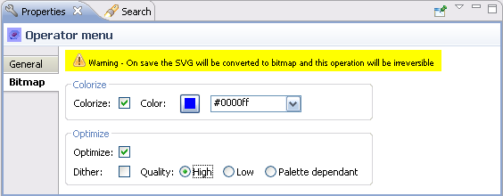

Properties View
The Properties view displays all the properties of the component that
is highlighted in the Editor. These properties include two tabbed
sections:
- General —This
includes the platform information, stretch
mode, an ID, and bounds (coordinates) for the component.
- Bitmap — This
includes the Colorize and Optimize options,
which allow you to transform vector graphic components (.svg's) into
bitmaps.
You display a component's properties by selecting a component, for
example, by highlighting the component in the Editor. The available
properties can then be adjusted in the Properties view.
General tab
The General tab provides the following:
- Platforms —
A series of icons
indicate the platforms in
which the selected component is available for display on a device.
- ID —
Displays the ID of the selected element
and cannot be edited by the user.
- Bounds —
Displays the co-ordinates for the selected
element.
- Stretch mode —
This option allows you to choose the whether the image should be stretched or kept as-is.
Keep Aspect Ratio mode retains the image as it is where as stretch mode option stretches the image to fit the device screen (Note : This option is not available for all elements).
The figure below illustrates the Properties view.
Figure:
Properties View-General
Bitmap tab
The Bitmap tab allows properties to be defined that colorize and optimize a
component’s bitmap graphics .
In the Colorize group, the Colorize check box is used to turn the
colorize feature on and off. When on, a color with which to colorize
the graphic can be selected.
In the Optimize group, the Optimize check box is used to turn the
optimization feature on and off. When on, there are two optimization
options:
Dither — this feature creates the illusion of color depth in
images using a limited color palette and reduces the size of bitmap
graphics compared to using a full color palette.
Quality — three quality options are provided:
- High
- Low
- Palette dependent

Figure:
Properties View-Bitmap
Note:
Properties view can be pinned to a given selection.